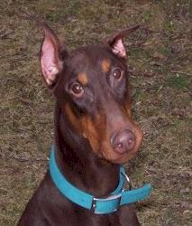

[Previous entry: "Big Brother in churches"] [Main Index] [Next entry: "Now it's NASA and the Census Bureau"]
01/19/2004 Archived Entry: "New addition to the family (Sweetie Pie)"

MEET THE NEWEST MEMBER OF THE FAMILY. Sweetie Pie, a red doberman, wandered in last week. The folks who found her were in awe. "She's got to be a show dog," they said when they called our rescue group, "She's so wonderful, so obedient, so pretty." They expected a frantic owner to call at any moment -- particularly because it appeared this girl had recently had pups. They couldn't figure out how she'd gotten lost in the first place, since she's a total "velcro dog" who doesn't want to be more than 10 feet from her human's side.But nobody ever called. Or put up lost-dog posters. Or placed an ad. Or answered our ad.
It was a few days before we could fetch Sweetie Pie down from the town where she'd been found, and then it took only a few minutes for the vet to give us a hint about why nobody was searching for such a beauty: bad hips, bad heart, probable breast cancer, and a serious case of middle age. She'd had puppies, indeed, but not recently. Probably dozens of puppies over the course of her life. Between endless nursing and the tumors, she only looked like a recent mom.
What we appear to have is somebody's discarded breeding bitch, no good for making money any more.
The vet will do more checking later this week to see if it's really cancer and whether it's metastasized. I'll keep you posted. In the meantime, it took about two seconds to fall seriously in love with this girl. All her health problems aside, the folks who found her were right. This is the gentlest, most loving, most exquisitely mannered, most beautiful dog you'd ever want to meet. I've never had any experience with dobies, but if they're like this, sign me up as a life member of the dobie fan club.
Even Robbie, The Great And Terrible Pit Bull (Mix), is being nice to her, as though he recognizes quality when he sees it. And if you knew Robbie, you'd know that's saying something. His general response to foster dogs is "Kill first; ask questions later. Preferably while enjoying a mouthful of their entrails."
(I cheated on the photo. This isn't really Sweetie Pie, but another rescue dobe I Googled. It could be her twin sister, though. I've got to beg, borrow, steal, or garage-sale a digital camera! Until I can post pix of my own, please accept this slightly inferior substitute.)
Posted by Claire @ 03:49 PM CST
Link